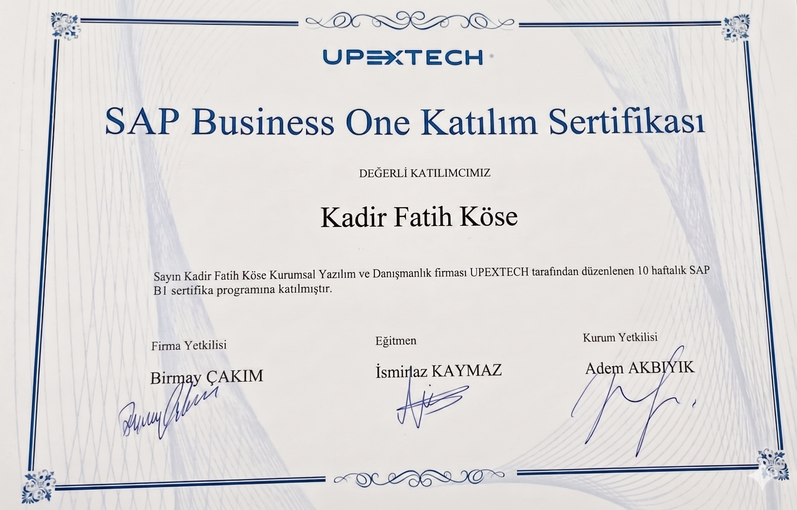
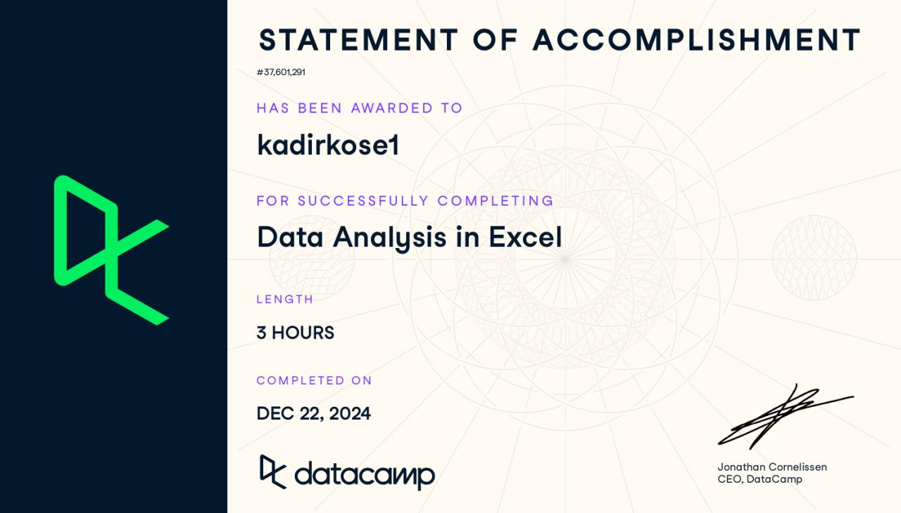
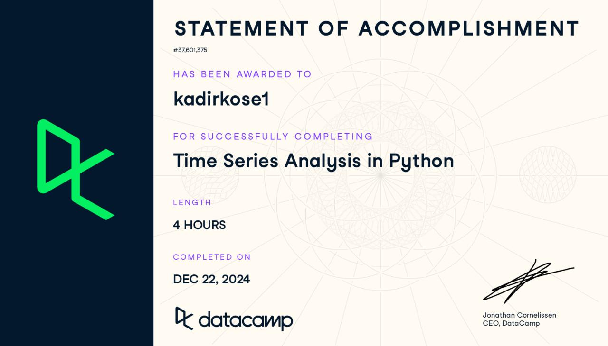
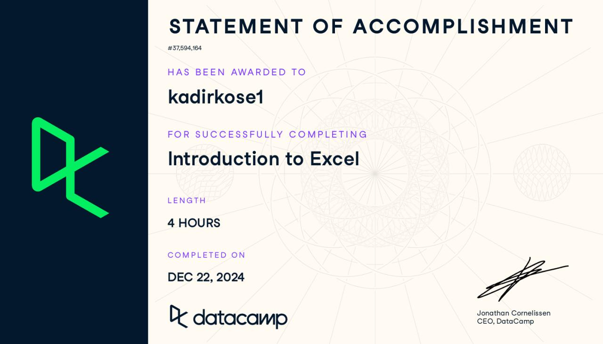

Sakarya Üniversitesi Yönetim Bilişim Sistemleri (YBS) mezunu, sistem yönetimi ve veri operasyonları odaklı BT uzman adayıyım. Essen AVM bünyesinde 33 şubelik geniş saha operasyonu yönetimi ve DVU Danışmanlık'ta .NET/Splunk ile merkezi izleme sistemleri geliştirme tecrübesine sahibim. SAP Business One sertifikasıyla iş süreçlerini, MSSQL yetkinliğiyle veri yönetimini teknik altyapıyla birleştiriyorum.
Hedefim; üretim, lojistik ve kurumsal yapılarda sistem sürekliliğini sağlayan, veriyi sorgulayıp raporlayan ve karmaşık uygulama hatalarını çözen BT Uygulama ve Veri Destek rollerinde değer üretmek.
33 şubede yer alan 100+ cihazlık altyapının (POS, kasa, el terminali, yazıcı, switch/router) kesintisiz çalışmasını 2-3 kişilik dinamik bir ekiple sağladım. Ticket sistemi üzerinden gelen arızaları Remote Desktop veya günlük saha müdahalesiyle yerinde tespit ederek hızlıca çözüm ürettim.
Ağ kopukluklarında duruma göre switch/router reset, port/kablo müdahalesi veya üst birime eskalasyon uygulayarak servis sürekliliğini ve iş akışını korudum.
Sorumluluklar & Kazanımlar:
✓ Geniş saha operasyonlarında son kullanıcı ve donanım sorunlarına proaktif çözümler geliştirdim.
✓ Kritik ağ ve sistem kopukluklarında kriz anlarını yöneterek iş akışının durmasını engelledim.
Teknolojiler: Windows Server, Ağ Yönetimi (Switch/Router), POS & El Terminali, Uzak Masaüstü
3 farklı kurumsal veritabanını tek bir merkezde birleştiren merkezi log izleme ve Splunk dashboard sistemi geliştirerek operasyonel görünürlüğü artırdım. Kurumsal veri güvenliğini güçlendirmek amacıyla, veritabanlararası yetki yönetimini sağlayan AES şifreleme tabanlı merkezi bir yetki yönetimi çözümü tasarlayıp hayata geçirdim.
Sorumluluklar & Kazanımlar:
✓ Dağınık log verilerini anlamlı dashboard'lara dönüştürerek sistemlerin izlenebilirliğini kolaylaştırdım.
✓ Veri tabanları arası geçişlerde backend katmanında kriptografik güvenlik çözümleri mimarisi üzerine çalıştım.
Teknolojiler: .NET, C#, Splunk, MSSQL, AES Kriptografi
Yönetim Bilişim Sistemleri (YBS) eğitimim boyunca kurumsal BT operasyonlarının hem yazılım hem de yönetim katmanına odaklandım. Algoritma, Nesneye Dayalı Programlama, Veri Yapıları ve Veri Tabanı Yönetimi dersleriyle güçlü bir backend altyapısı kazanarak teknik projelerimin temelini attım.
Bu yazılım ve veri tabanı yetkinliklerimi; Kurumsal Kaynak Planlama (ERP), Sistem Analizi ve Tasarımı ile Gereksinim Yönetimi gibi süreç analiz dersleriyle birleştirdim. Ayrıca Maliyet Muhasebesi ve İş Analitiği dersleriyle de teknik çözümleri kurumsal iş mantığıyla harmanlayarak sistem sürekliliğine odaklanan kapsamlı bir bakış açısı geliştirdim.
Kamu ve özel sektörden toplanan verilerin SPSS programı üzerinde istatistiksel testlerle analiz edildiği ampirik bir bitirme çalışmasıdır.
İnceleDağınık SQL veritabanları arasında güvenli geçiş sağlayan ve bağlantı bilgilerini AES algoritmasıyla şifreleyen bir .NET MVC uygulamasıdır.
İncele.NET 8 ve katmanlı mimari kullanılarak uzak sunucu servislerini ve sistem loglarını merkezi olarak yöneten bir sistem aracıdır.
İnceleDraw.io ile veri akış mimarisi modellenen ve MS Project ile zaman planlaması kurgulanan bir sistem analizi projesidir.
İncele
Kurumsal kaynak planlama (ERP) süreçleri, envanter, üretim ve satın alma modülleri üzerine tamamlanan yetkinlik belgesidir.

Büyük veri setlerini işleme, dinamik tablolar (Pivot Table) oluşturma ve veri analitiği fonksiyonlarını kullanma uzmanlık belgesidir.

Excel ortamında geçmişe yönelik dönemsel verileri işleme, trend analizi yapma ve geleceğe dönük tahminleme modelleri kurma belgesidir.

Veri düzenleme, mantıksal formüller, arama fonksiyonları (VLOOKUP/XLOOKUP) ve temel tablolama mimarisi yetkinlik belgesidir.